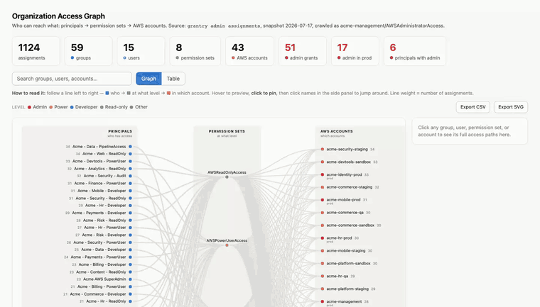

grantry logs you into AWS IAM Identity Center once, then hands out short lived credentials on demand. You get a clean command line. Your AI coding agents get the same credentials over MCP, but only for the accounts and roles you allow, only for as long as you permit, and every request is written to an audit log.
Everything stays on your machine. grantry talks to AWS and nothing else. Tokens live in the OS keychain, never in a plain file.
# point grantry at your Identity Center, just once grantry login --start-url https://your-org.awsapps.com/start --region us-east-1 # generate a policy from your real access, then use any role grantry init grantry run my-dev/AWSReadOnlyAccess -- aws s3 ls
After login, the native aws CLI, boto3, and Terraform work too. Add a credential_process profile if you want every native fetch policy checked and audited.
Agents get credentials over MCP, gated by your policy. When a session expires, the agent asks you to log in and resumes on its own.
A short YAML file decides which identities each agent may use and for how long. Deny beats allow. Unlisted is denied for agents.
An append only log records who asked for what, when, and which rule decided it. It never contains a credential.
A credential_process profile routes the aws CLI, boto3, and Terraform through grantry, so those fetches are checked and logged like the rest.
grantry console opens the AWS console in your browser as any identity you can use. No copy pasting keys, no juggling profiles.
Admins crawl who has which permission set in which account, snapshot it, and diff what changed since last time. AWS gatekeeps the data.
grantry admin assignments --visualize crawls the whole
organization and writes one self-contained HTML file: principals →
permission sets → accounts, colour-coded by privilege, with risk KPIs.
Click any node to trace its access; a group shows its members, a permission
set its policies, an account its OU.

grantry install # auto detect every client you have grantry install cursor # or a specific one
Supported: Claude Code, Claude Desktop, Cursor, Windsurf, and VS Code. grantry is added without touching your other MCP servers, and each client gets its own audit label.